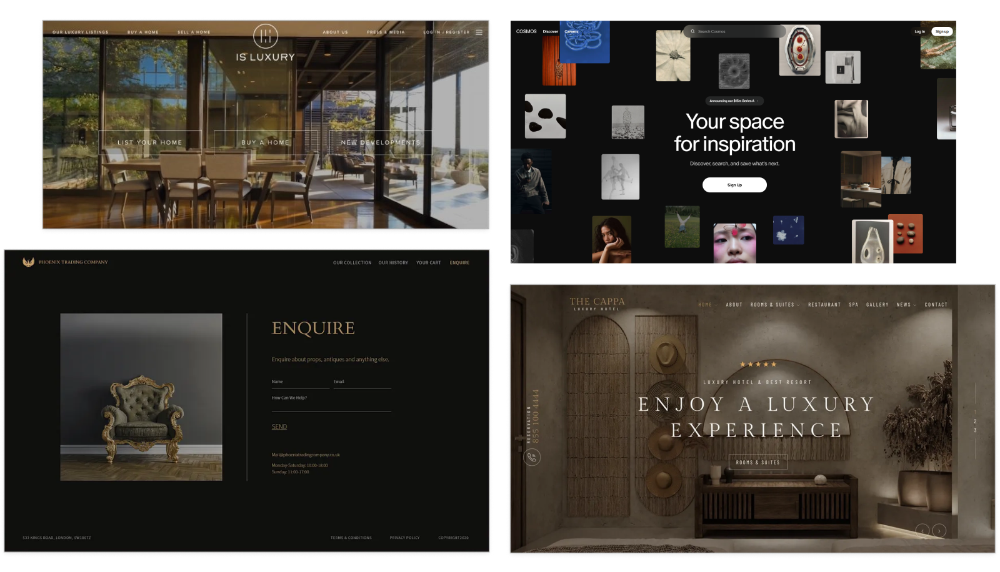
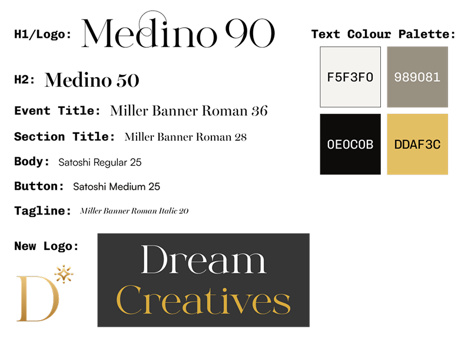
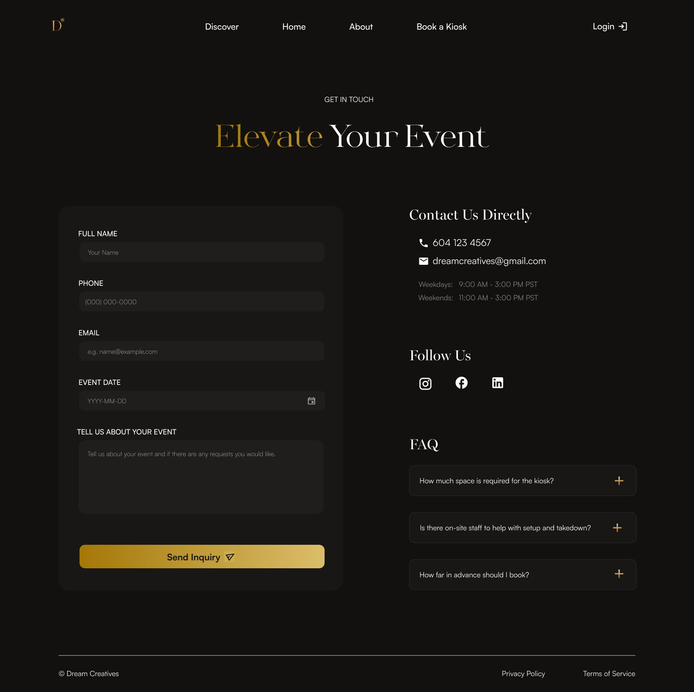

The Goal
Given a limited time frame, the main goal in completing this project was to improve usability, clarity, and communication of the service that was being offered. In addition to these user experience considerations, I also focused on enhancing the overall visual design to create a more cohesive interface and establish a clear content hierarchy, while maintaining alignment to the brand’s defined visual identity.
Problem!
At the beginning of the project, the scope and expectations were not clearly defined, which created a lot of uncertainty within our team on how we were to approach the redesign.
Making it difficult to determine what pages or features needed to be worked on.
Leaving us unsure of what issue the redesign needed us to address and solve.
Creating a challenge in managing our time effectively and prioritizing tasks.
To address this issue, our team participated in a client meeting the following day to better understand the project goals, expectations, and prioritize what needed to be done.
The Process
Client Meeting
Our team conducted a client meeting to gain a better understanding of the overall goals and expectations. My role in this process was to help create key questions in preparation, and to document the main insights from the client during the meeting.
What differentiates you from competitors?
More approachable, event-focused, professional alternative, photobooth experience
What is the project scope and areas of priority?
Enhance About and Contact pages, simplify sign-up process, improve onboarding
Pain Points Identified
Unclear product offering, confusing theme descriptions, hard to find key information such as About or Pricing
New Opportunities
Add visual previews of each theme, overview on how the product works, benefits section compared to competitors
User Research
Following the meeting, I helped develop and conduct user research through informal interviews and surveys with friends and family. By completing this I identified key pain points, areas of confusion, and opportunities for new features to enhance the experience.
Design Inspirations
As a Co-Lead UI/UX Designer, the next step was for my partner and I to gather visual inspiration to help shape the overall design direction while still supporting the client’s goals. We explored various typefaces and collected a wide range of references, such as site layouts and interface designs.


Refining Style Guide
Given a simple style guide, I worked on adjusting the existing colour palette and finding new typefaces that were similar to the original, but better suited the new direction. Throughout this process, I ensured the typography remained readable and visually consistent with the brand’s established visual identity.
Building Key Pages
Towards the end of the second day, my partner and I began building the key pages that were identified earlier in the design process. We chose to split the pages amongst ourselves, with me focusing on the About, Contact, Sign-up, and Onboarding pages. While designing, I prioritized clarity in content and site navigation.
About Page Design Decisions
The original About Page was difficult to find and lacked clarity about the product being offered. It focused heavily the technicality of the AI tool but failed to communicate the main service – a photobooth experience designed for special events.
Here's what I did to address that:
I focused on communicating the product as a unique photobooth experience that could be booked for private events early in the page. I also added a benefits section, highlighting benefits received by both hosts and guests, enticing users to the product.
Contact Page Design Decisions
The original Contact Page, was simply a button that opened a modal with a basic form to fill out. Based on our findings from user research, the lack of context left people unsure of what they were inquiring about.
Here's what I did to address that:
I introduced a dedicated Contact page accessible form the main navigation, featuring a detailed booking form for users to provide relevant information regarding their event. Additionally, I provided alternative contact methods, and a FAQ section to address common questions found in both user research and our own evaluation.

Onboarding Page Design Decisions
Our user research identified that participants were often times confused about what the different themes meant and how they would affect their pictures.
Here's what I did to address that:
I added a theme sorting system to help users sort through 20+ themes and find one they liked as well as a progress bar to set time expectations.
Final Product

Takeaways
Through the process of completing this redesign, I gained several valuable insights.
Clearly defining the problem you are aiming to solve early in the design process is critical! Without this, it is easy to start mindlessly designing, making time management difficult.
While I had known it was important, I did not realize how much it shapes design decisions. By identifying pain points and areas of confusion regular users had, I was able to make informed decisions and uncover issues I had not initially realized.
Overall, this project has taught me that a structured process and attention to user needs, is the blueprint for creating clear and usable digital experiences. While it was an intense weekend, I am proud to have completed the project and imensely grateful for the insights I have gained!